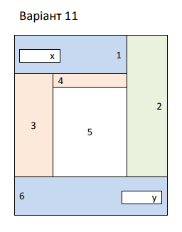

I have the highground!
You were the chosen one!
Just another text coming right here

War! The Republic is crumbling under attacks by the ruthless Sith Lord, Count Dooku. There are heroes on both sides. Evil is everywhere.
In a stunning move, the fiendish droid leader, General Grievous, has swept into the Republic capital and kidnapped Chancellor Palpatine, leader of the Galactic Senate.
As the Separatist Droid Army attempts to flee the besieged capital with their valuable hostage, two Jedi Knights lead a desperate mission to rescue the captive Chancellor.
Citizens of the civilized galaxy, on this day we mark a transition. For a thousand years, the Republic stood as the crowning achievement of civilized beings. But there were those who would set us against one another, and we took arms to defend of way of life against the Sepratists. In doing so, we never suspected that the greatest threat came from within.
The Jedi, and some within our own Senate, had conspired to create the shadow of Separatism using one of their own as the enemy's leader. They had hoped to grind the Republic into ruin. But the hatred in their hearts could not be hidden forever. As last, there came a day when our enemies showed their true natures.
The Jedi hoped to unleash their destructive power against the Republic by assassinating the head of government and usuring control of the clone army. But the aims of the would-be tyrants were valiantly opposed by those without elitist, dangerous powers. Our loyal clone troopers contained the insurrection within the Jedi Temple and quelled uprisings on a thousand worlds.
The remaining Jedi will be hunted down and defeated. Any collaborators will suffer the same fate. These have been trying times, but we have passed the test.
The attempt on my life has left me scarred and deformed, but I assure you my resolve has never been stronger. The war is over. The Sepratists have been defeated, and the Jedi rebellion has been foiled. We stand on the threshold of a new beginning.
In order to ensure the security and continuing stability, the Republic will be reorganized into the first Galactic Empire, for a safe and secure society, which I assure you will last for 10,000 years. An Empire that will be continue to be ruled by this august body and a sovereign ruler chosen for life. An Empire ruled by the majority, ruled by a new consitution.
Hello there!
Dont try it!